The Patterns in Web Applications
Example: one MVC for the whole app (client + server)

Student struct is the M,
and the JSON encoding is the
V
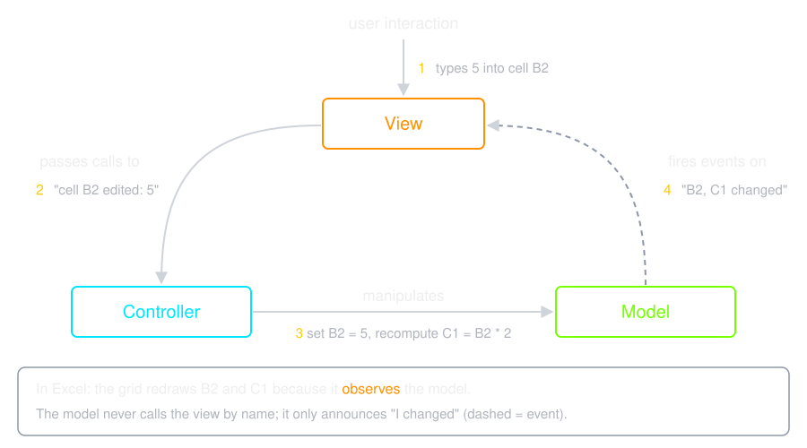
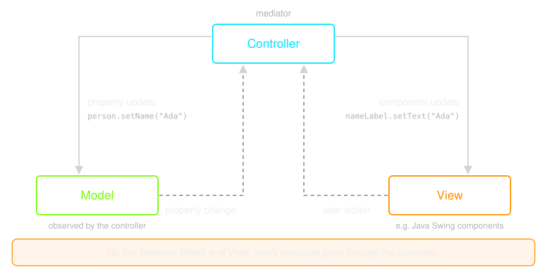
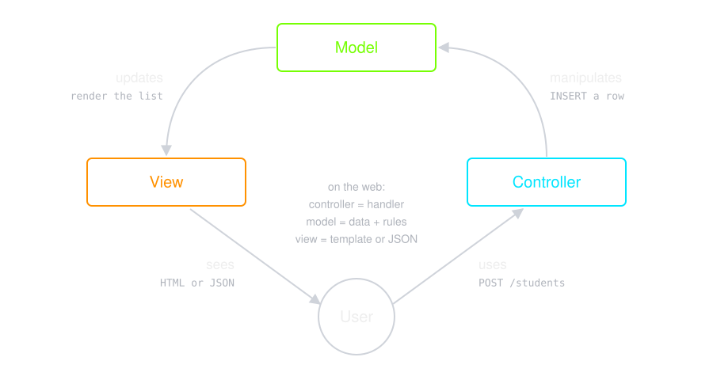
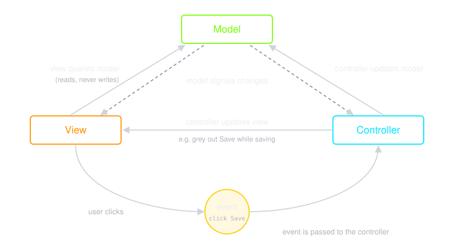
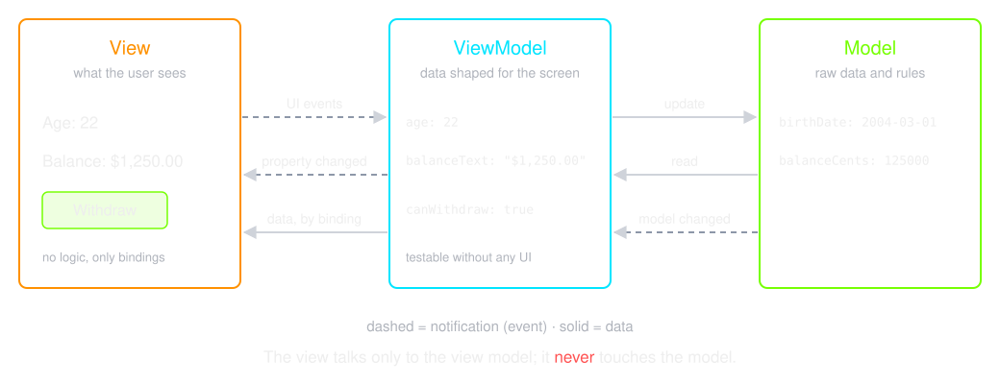
Example: one MVC for the whole app (client + server)
net/http — handlers, no prescribed pattern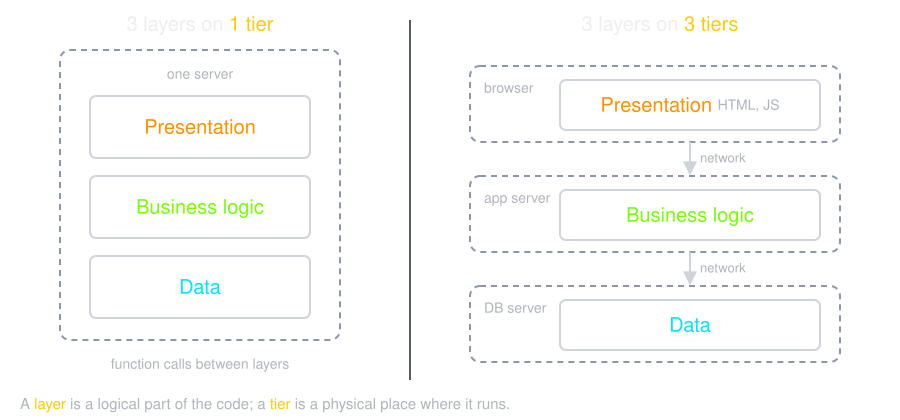
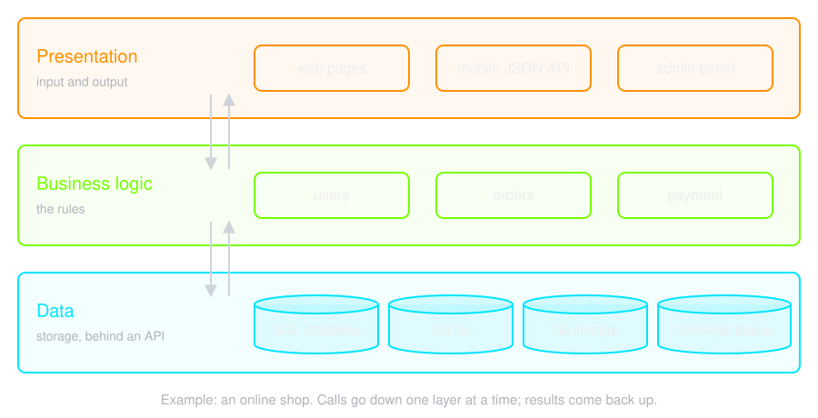
The same net/http server as
go-lecture/httpserver, now with students. The handler never sees SQL; the data layer is an
interface.
![curl sends GET /students/9531 to StudentHandler.Get, the presentation layer, which parses the id, calls the service and writes JSON. It calls StudentService.Find, the business layer, whose rule is that the id must be positive. That calls the StudentStore interface, the data layer, with Get(id int64) (Student, error). MemStore implements the interface today; a PostgresStore could implement it later. Nothing above the interface imports a database package. The answers are 200 with the student, or 404 student not found.](./img/layered-server.svg)
type Student struct {
ID int64 `json:"id"`
FirstName string `json:"first_name"`
LastName string `json:"last_name"`
}
// data layer: the layers above see only this interface
type StudentStore interface {
Get(id int64) (Student, error)
}
var ErrNotFound = errors.New("student not found")
// MemStore is one implementation; a PostgresStore would be another
type MemStore map[int64]Student
func (m MemStore) Get(id int64) (Student, error) {
s, ok := m[id]
if !ok {
return Student{}, ErrNotFound
}
return s, nil
}// business layer: the rules, written against the interface
type StudentService struct{ Store StudentStore }
var ErrBadID = errors.New("student id must be positive")
func (s StudentService) Find(id int64) (Student, error) {
if id <= 0 {
return Student{}, ErrBadID
}
return s.Store.Get(id)
}
func main() {
store := MemStore{
9531: {ID: 9531, FirstName: "Linus", LastName: "Torvalds"},
}
h := StudentHandler{Svc: StudentService{Store: store}}
mux := http.NewServeMux()
mux.HandleFunc("GET /students/{id}", h.Get)
log.Fatal(http.ListenAndServe("127.0.0.1:1373", mux))
}// presentation layer: HTTP in, JSON out; no SQL, no rules
type StudentHandler struct{ Svc StudentService }
func (h StudentHandler) Get(w http.ResponseWriter, r *http.Request) {
id, err := strconv.ParseInt(r.PathValue("id"), 10, 64)
if err != nil {
http.Error(w, "bad id", http.StatusBadRequest)
return
}
s, err := h.Svc.Find(id)
switch {
case errors.Is(err, ErrNotFound):
http.Error(w, err.Error(), http.StatusNotFound)
return
case err != nil:
http.Error(w, err.Error(), http.StatusBadRequest)
return
}
w.Header().Set("Content-Type", "application/json")
_ = json.NewEncoder(w).Encode(s)
}$ curl -i localhost:1373/students/9531
HTTP/1.1 200 OK
Content-Type: application/json
Date: Mon, 16 Nov 2026 01:16:20 GMT
Content-Length: 56
{"id":9531,"first_name":"Linus","last_name":"Torvalds"}
$ curl -s -w '%{http_code}\n' localhost:1373/students/42
student not found
404
$ curl -s -w '%{http_code}\n' localhost:1373/students/0
student id must be positive
400
$ curl -s -w '%{http_code}\n' localhost:1373/students/abc
bad id
400Server-side rendering: the server builds the HTML. Example: TMail, a PHP (Laravel) mail app, last updated in 2016.
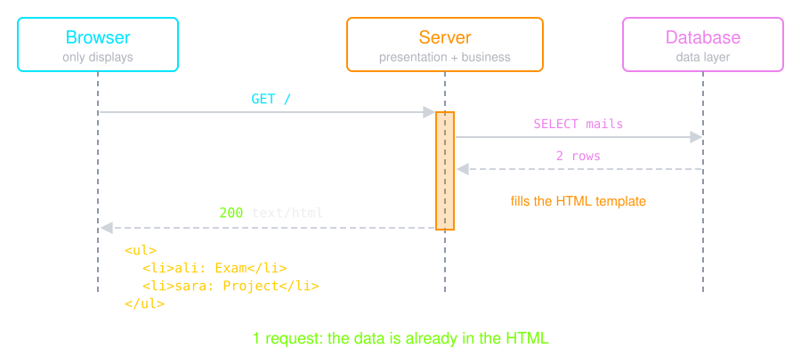
Client-side rendering: the browser builds the HTML. Example: say-hello, a Go (Fiber) API serving a React app made with Create React App (deprecated since February 2025).
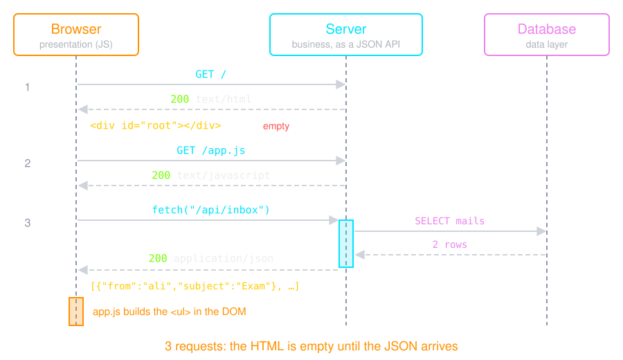
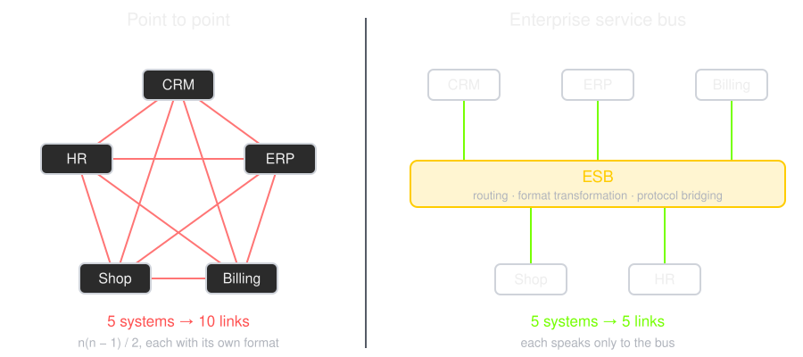
The bus let enterprises add more and more systems without the number of integrations exploding.
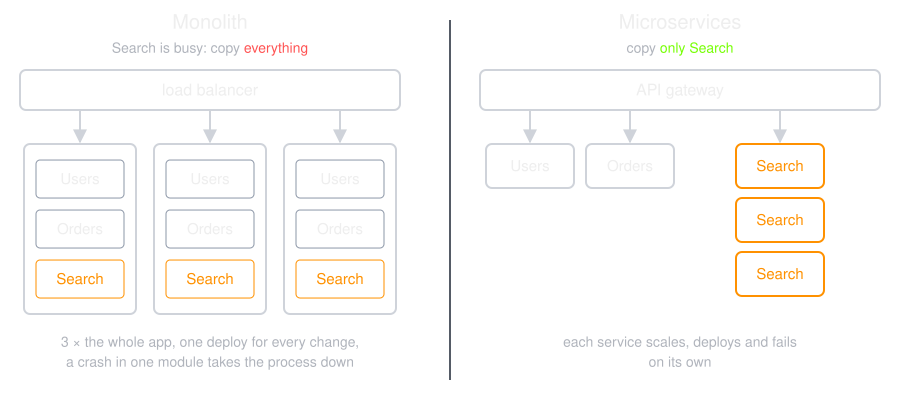
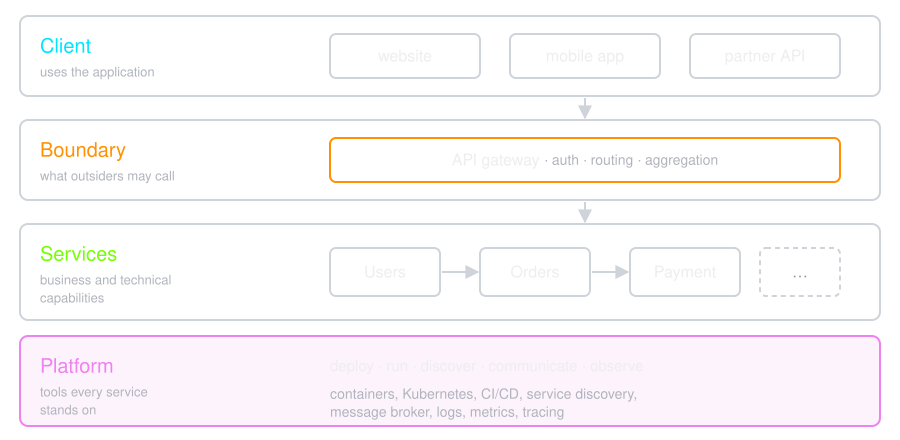
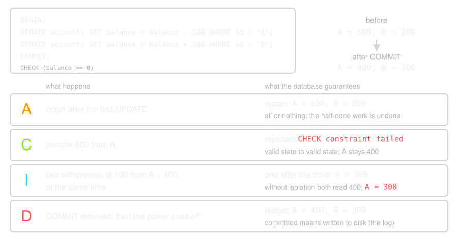
= 0; afterwards A = 400, B = 300. Atomicity: a crash after the first UPDATE leaves A = 500, B = 200 after restart. Consistency: transferring 600 from A is rejected with CHECK constraint failed. Isolation: two withdrawals of 100 from A = 400 at once end at A = 200; without isolation both read 400 and A ends at 300. Durability: after COMMIT returns, a power cut still leaves A = 400, B = 300." width="860" />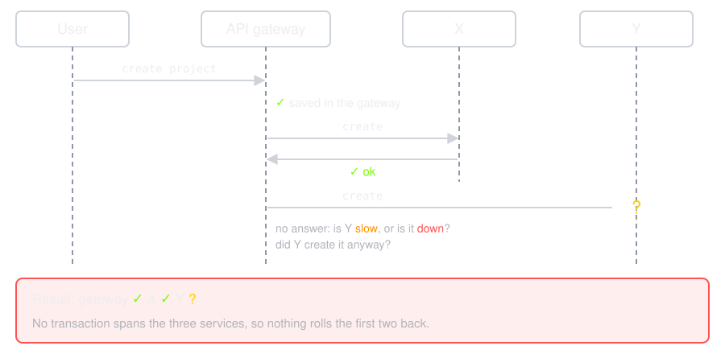
![The fix. The API gateway saves project p-42 as pending and an outbox row project.created in one local transaction, so both are saved or neither. A relay publishes project.created with id p-42 to a broker, which delivers it to X and Y. Each runs INSERT p-42 ON CONFLICT DO NOTHING. If Y is down, the event waits and is delivered when Y is back; if X gets it twice, the second insert does nothing; without an ack the broker redelivers. Result: gateway, X and Y all have the project, Y a little later. Saga: if Y refuses p-42 for good, it publishes project.failed and X and the gateway delete p-42 as a compensating step.](./img/outbox.svg)
During a network partition, a distributed data store must choose between consistency and availability:
"Pick 2 of 3" is the popular form; Brewer (2012) calls it misleading. With no partition, a system can be both.
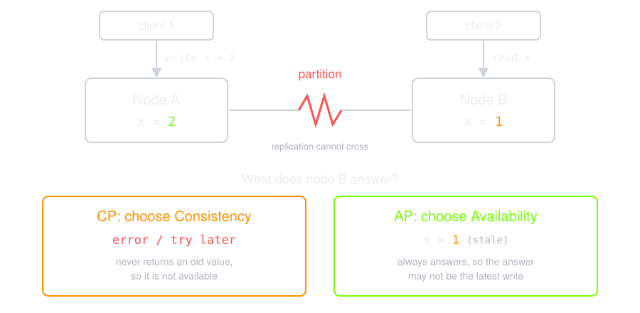
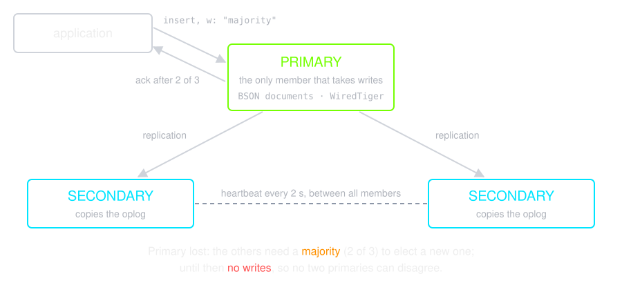
majority (the default since 5.0)
and reads from the primary; a read from a secondary may be stale.
QUORUM (2 of 3) writes and reads overlap, so a
read sees the latest write.
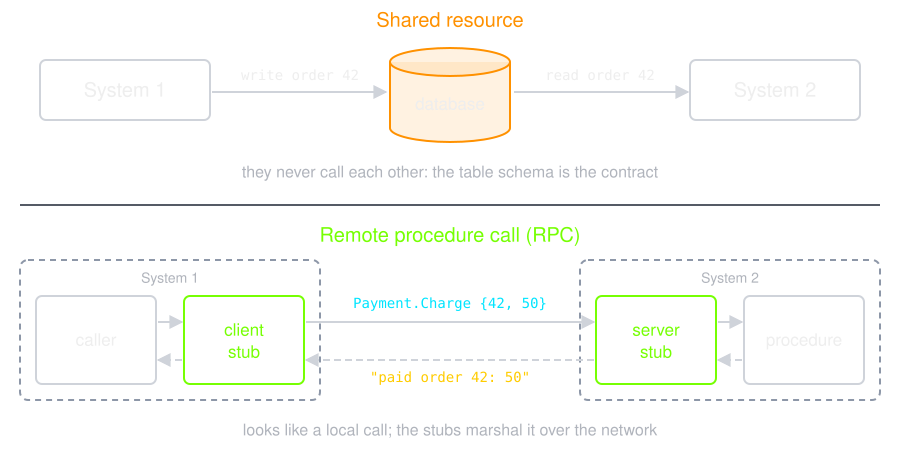
Between microservices a shared database is an anti-pattern: each service owns its data (database per service) and others reach it only through its API.
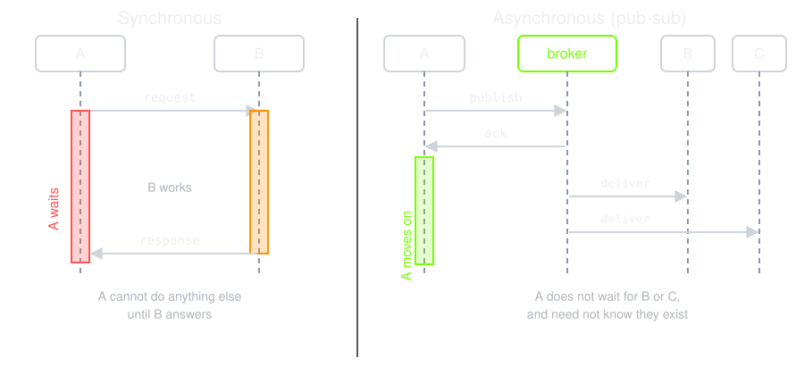
Client-server is synchronous; publish-subscribe through a message broker is asynchronous.
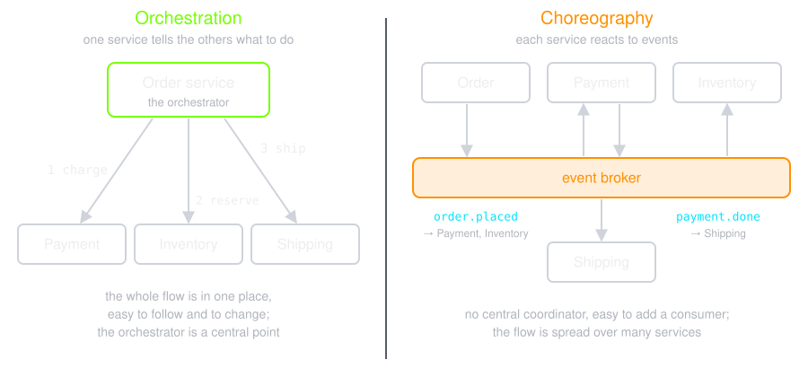
Choreography is borrowed from dance: the steps are designed in advance, and nobody conducts during the show.
By announcing events, services no longer need to know their downstream consumers, so the system is easy to extend. The broker routes each event by its subject.
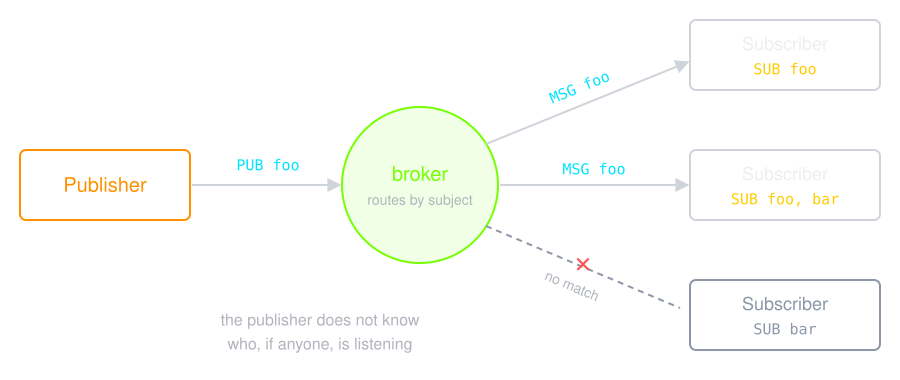
| Guarantee | MQTT | Lost? | Duplicated? |
|---|---|---|---|
| at-most-once (fire and forget) | QoS 0 | maybe | never |
| at-least-once | QoS 1 | never | maybe |
| exactly-once | QoS 2 | never | never |
/students/9531
GET reads, POST creates,
PUT replaces, DELETE removes
GET /students/9531 → 200 and the
student as JSON (the layered server)
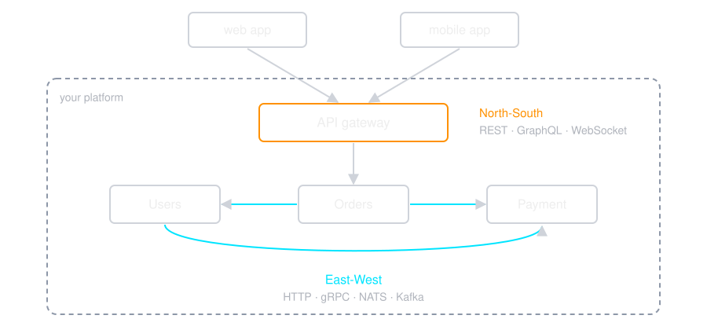
In a typical enterprise platform, North-South traffic is the more sensitive and customer-facing communication flow that attracts the maximum attention from everyone.
Most of the time, architects and technical leads give priority to the consumer-facing interfaces and they let developers decide on the internal communication between services.